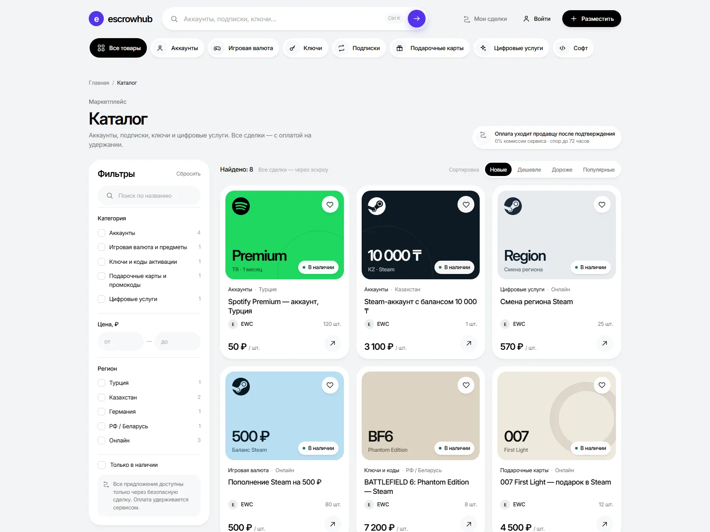
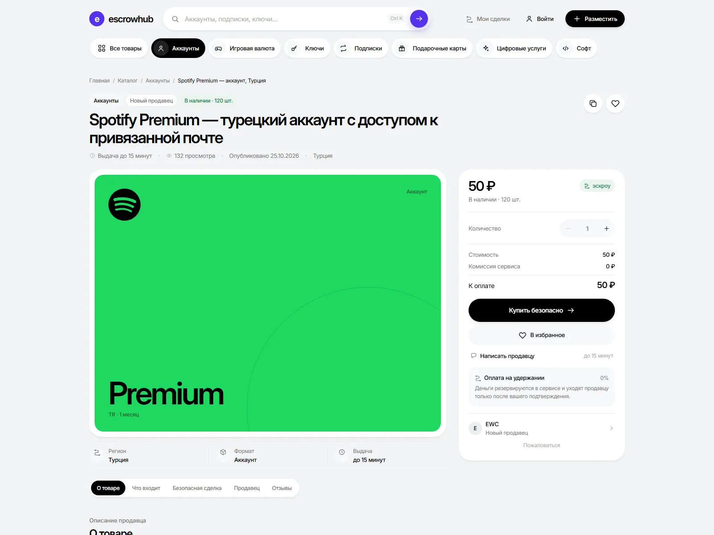
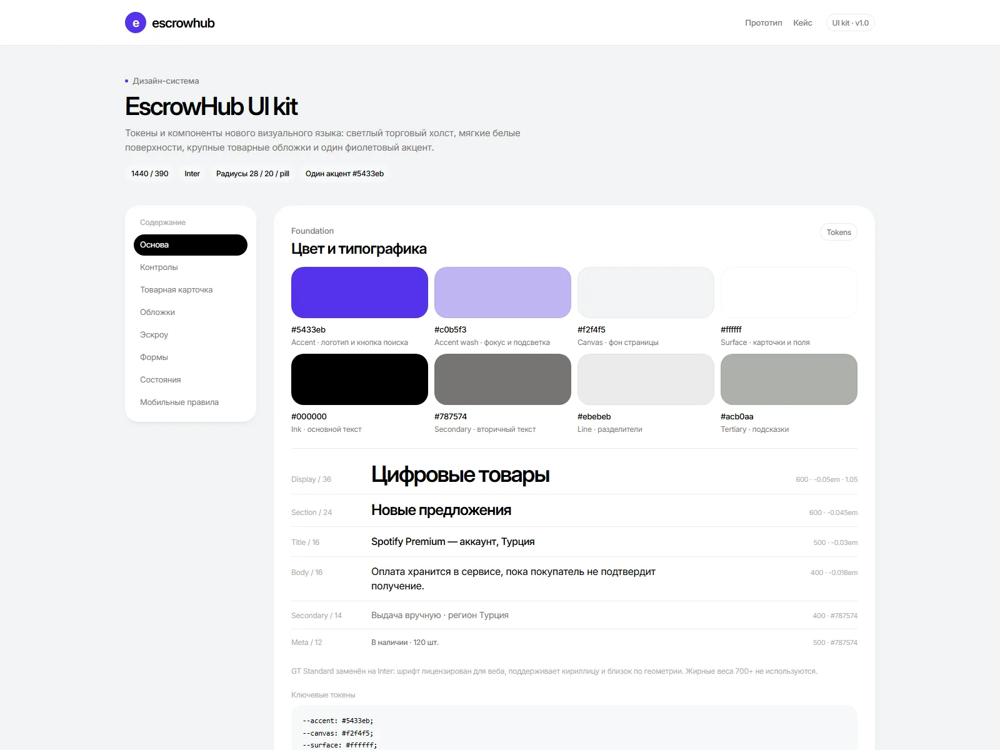
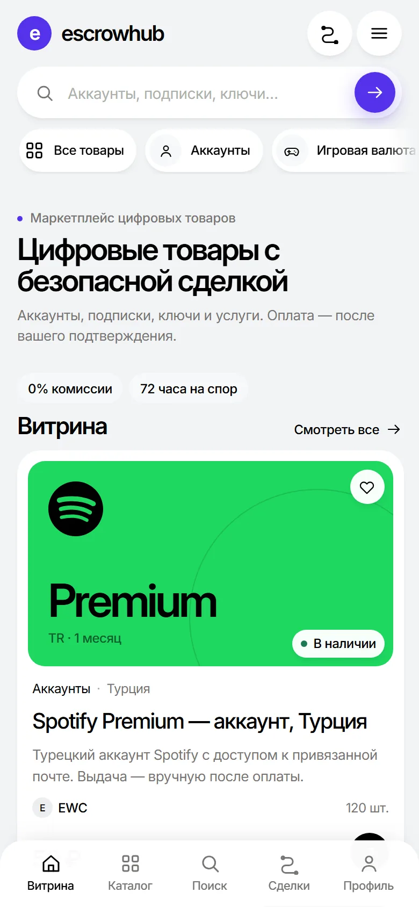

EscrowHub
Редизайн витрины цифровых товаров: светлая система, один акцент и продуманные состояния сделки.

Задача
Пересобрать витрину маркетплейса цифровых товаров так, чтобы эскроу был понятен с первого экрана, а покупка не тонула в деталях. Донор — публичная версия EscrowHub.online.
Система
Холодный светлый холст, белые поверхности без рамок, один фиолетовый акцент, карточки 28 px, pill-контролы и Inter. Товарные обложки — собственная графическая система с брендовыми цветами, без стоковых фотографий.
Эскроу объясняется не баннером, а сценарием: деньги удерживаются, продавец передаёт товар, покупатель подтверждает. Эти же правила повторяются в карточке, оформлении и кабинете.
Сценарии
- Витрина: поиск, категории, крупные обложки, пополнение сервисов, FAQ.
- Каталог: фильтры, сортировка, активные чипы, пустое состояние и bottom sheet на мобильном.
- Карточка товара: продавец, условия, покупка, чат и оформление демо-сделки.
- Кабинеты покупателя и продавца: стадии сделки, подтверждение, спор, кошелёк.
- Состояния ошибок и дизайн-система с токенами и контролами.




Mobile / 390 × 844
Честные границы
Бэкенда, оплаты и авторизации нет: заказы, баланс и сообщения демонстрируют состояния интерфейса. Цены и названия взяты с публичных страниц сервиса, часть подписей нормализована для показа.